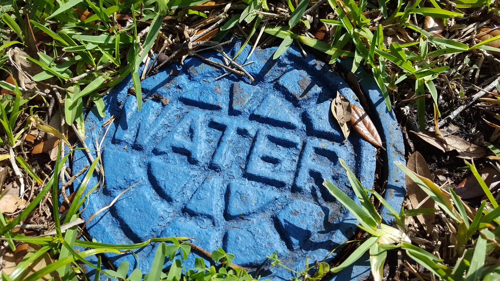
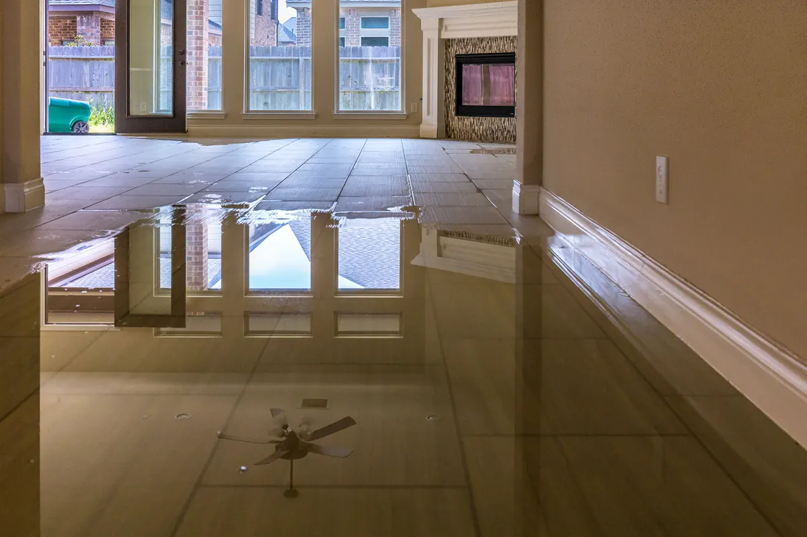

We all take running water for granted. It's there when we need it, for showers, dishes, laundry, and everything in between. But what happens when that water suddenly becomes a destructive force? A burst pipe, a leaky appliance, or a toilet overflow can quickly turn your home into a waterlogged disaster. That's where knowing your main water shut-off comes in – and why having a master shut-off inside is a lifesaver.
The Panic of the Unexpected Leak
Imagine this: you're relaxing at home when you hear a gushing sound. You rush to the bathroom to find water spraying from a burst pipe under the sink. Panic sets in. Every second counts as water floods your floors, seeps into walls, and threatens to damage your belongings.
In this scenario, knowing the location of your main water shut-off is the difference between a minor inconvenience and a major catastrophe.
Why Your Main Shut-Off Matters:
- Preventing Extensive Damage: Quickly shutting off the water supply can minimize water damage to your home and belongings. This can save you thousands of dollars in repairs, replacements and disruption to your life routine.
- Protecting Your Valuables: Water can ruin furniture, electronics, and irreplaceable sentimental items. A swift shut-off protects these valuable possessions.
- Safety First: In severe leaks, standing water can create electrical hazards. Shutting off the water reduces the risk of electrical shock.
- Peace of Mind: Knowing you can quickly stop a leak gives you peace of mind, knowing you're prepared for unexpected emergencies.
Where is Your Main Shut-Off?
Your main water shut-off is typically located:
- Near Your Water Meter: This is often found outside your home, either in a meter box in the ground or attached to an exterior wall.
- In the Basement or Crawlspace: If you have a basement or crawlspace, the shut-off valve might be located along the main water line entering your home.
- Inside a Utility Closet: In some homes, the shut-off valve is located inside a utility closet or near the water heater.
Take the time to locate and identify your main water shut-off valve. It's often a wheel or lever.

Tips to Maintain Your Water Shut Off Valve:
- Once a quarter using a water key, cycle the valve and check a water spigot to ensure the water is indeed turning off.
- If your water shut off valve is located outside in a meter box, keep dirt and debris from building up that would hinder accessing the valve.
- If your water shut off valve is located inside a meter box, if not already, paint the cover a bright blue so that it can be easily spotted in an emergency.
- Desire more protection? Consider a smart valve by Angle Stop Plumbing that will shut off water as soon as a spike in water volume is detected.
The Importance of an Inside Master Shut-Off
While your main shut-off is crucial, accessing it can be challenging, especially in inclement weather or during a frantic emergency. That's why having a master shut-off valve inside your home is incredibly beneficial.
No matter the location of your master shut off valve, it's critical that all occupants understand the location, how to turn water off and keeping the area free of debris to permit easy access in the event of an emergency.
Benefits of an Inside Shut-Off Valve:
- Easy Access: In an emergency, you can quickly shut off the water without having to go outside.
- Convenience: It's more convenient to use an inside shut-off valve for minor repairs or appliance replacements.
- Added Protection: It provides an extra layer of protection against water damage.
Consider having Angle Stop Plumbing install a master shut-off valve inside your home if you don't already have one. It's a small investment that can save you big in the long run.
Proactive Steps to Take:
- Locate your main water shut-off valve.
- Test the valve regularly to ensure it's working properly.
- Label the valve for easy identification.
- Teach all household members where the shut-off valve is located and how to use it.
- Consider installing an inside master shut-off valve.
- Keep a water key, wrench or pliers near the shut-off valve.
In Conclusion:
Don't wait until disaster strikes to learn about your water shut-off. Taking a few minutes to locate and understand your shut-off valves can make a world of difference in preventing costly water damage. Be prepared, be proactive, and keep your home dry.
